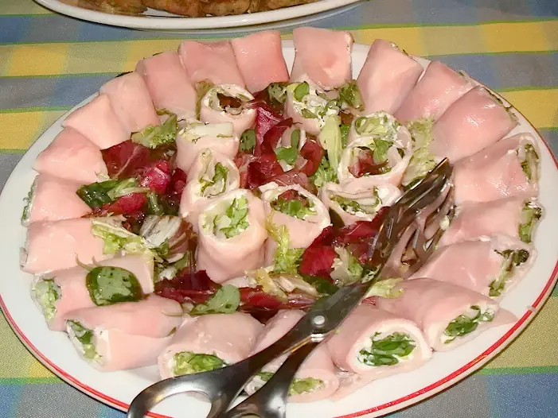

Фото: letorrivacation, CC BY 2.0

Рулетики из ветчины с сыром и чесноком
Холодная закуска из тонких ломтиков ветчины с сырно-чесночной начинкой
20 мин6 порц.283 ккал на порциюБ 14 · Ж 24 · У 1Русская кухня
Продукты на 6 порц.
- Ветчина15 ломтиков
- Сыр твёрдый150 г
- Чеснок2 зуб.
- Майонез2 ст. л.
- Укроп0,5 пучка
- Перец чёрный молотый по желаниюпо вкусу
Как готовить
- Сыр натрите на мелкой тёрке, чеснок выдавите через пресс.
- Укроп мелко порубите, оставьте несколько веточек для украшения.
- Смешайте сыр, чеснок, укроп и майонез до густой пасты. При желании поперчите.
- На каждый ломтик ветчины выложите чайную ложку начинки ближе к краю и сверните плотным рулетиком.
- Если рулетики разворачиваются, сколите их шпажкой или перевяжите пером зелёного лука.
- Уберите в холодильник на 30 минут, чтобы начинка схватилась, и подавайте.
Совет. Ветчину просите нарезать в магазине на слайсере: ломтик толщиной 1-2 мм сворачивается и не ломается.